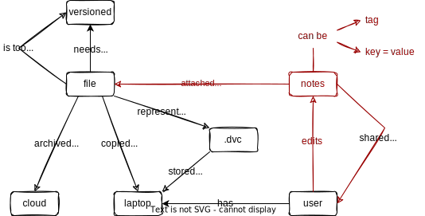

Product Management
What It Is
- The product manager manages the feature list
- What hurts to do?
- What can't we do at all?
- Requires:
- Discussions with users (including potential future users)
- Observation (which often contradicts what they say)
- Produces:
- A roadmap for the product's evolution
Complexity Budget
- Most features are never used by most people
NAME
ls -- list directory contents
SYNOPSIS
ls [-ABCFGHLOPRSTUW@abcdefghiklmnopqrstuwx1%] [file ...]
- So "improving" doesn't always mean "adding features" [Perri2018]
- "Two features forward, one feature back"
What's Wrong with Git?
- [PerezDeRosso2013] found that even experienced Git users' mental models of it were significantly different from how it actually works
- So they designed a simpler interface
- But online documentation had too powerful gravitational pull [PerezDeRosso2016]
- In practice, retiring features is nearly impossible
- Python 3 is now 14 years old…
Starting Point

Taking Notes
- User: "I want to be able to add notes to my data"
- Product Manager:
- "What kind of notes?"
- "Are they shared with other people?"
- "Can you search for notes?"
- "Can you change them?"
- "If so, can you look at old notes?"
Concept Map

Requirements Discovery
- User: "I want to be able to add notes to my data"
- Product Manager:
- "What kind of notes?"
- "Are they shared with other people?"
- "Can you search for notes?"
- "Can you change them?"
- "If so, can you look at old notes?"
Requirements Discovery
- User: "I want to be able to add notes to my data"
- Product Manager:
- "What kind of notes?"
- "Are they shared with other people?"
- "Can you search for notes?"
- "Can you change them?"
- "If so, can you look at old notes?"
- If they aren't shared, add data to
.dvcfile on user's computer - If they are shared:
- Add a file of notes in the cloud
- Add a single line to the
.dvcfile pointing at the shared notes - Mumble mumble versioning
Division of Responsibilities
- If they aren't shared, add data to
.dvcfile on user's computer -
If they are shared:
- Add a file of notes in the cloud
- Add a single line to the
.dvcfile pointing at the shared notes - Mumble mumble versioning
-
Not the product manager's responsibility
- Developers are responsible for implementation
- But:
- There has to be conversation to identify this as the key question
- You are probably both the product manager and the architect
Comparing Mental Models
- Draw a concept map for the thing you're working on.
- Half a dozen concepts
- Label the relationships
- Not radial or hierarchical
- Compare it with the concept maps drawn by your colleagues.
- Where do they differ?
- Why do they differ?